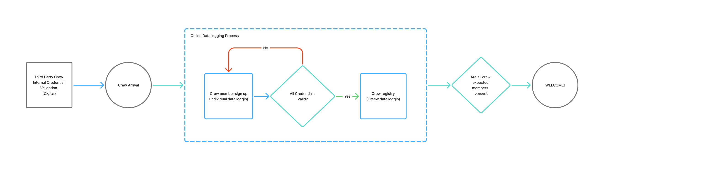
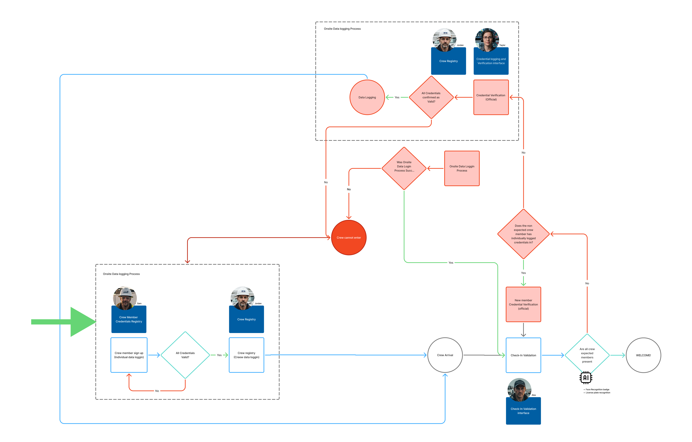

The
Problem
The gate couldn't keep up
When severe storms hit, mutual assistance crews and contractor squads rush to staging sites to restore power. Check-in took 3 to 25 minutes per person, stranding 4-to-8-person crews in line and directly delaying emergency restoration work. The client's first request was a faster gate app.
Check-in is credential validation
A UI refresh couldn't fix gate congestion, because check-in is fundamentally an identity and credential validation process, built to keep uncertified personnel off a hazardous worksite. Field crews are non-technical, stressed, and in a hurry. Expecting individual workers to complete digital forms at the gate during an active emergency guaranteed it would fail.
Where the real leverage actually sat
Field interviews, persona synthesis, and empathy mapping surfaced two operational points worth acting on. Contractor management lived and died by client compliance, and was desperate for an easier way to hit that bar. And every 4-to-8-person squad already had a Crew Lead who managed logistics for their truck. The verification work didn't need to happen at the gate at all, it could move upstream to someone who already owned it.
Individual verification was solving the wrong moment
The bottleneck wasn't the interface at the gate, it was asking each individual worker to do credential work at the single worst possible moment to ask it, mid-emergency, standing in a line. Verifying the squad before departure, instead of each person on arrival, removed the bottleneck at its source.
I shifted the architecture from gate-side individual processing to pre-flight squad verification.
Crew Leads validate their entire squad's credentials digitally before departing for the site. At the gate, check-in drops to a single squad QR scan and a 30-second visual identity match, with no individual forms and no line.



Verify Before
Departure
Digital artifacts, registrations, certifications, and squad QR credentials, replaced fragmented paperwork with a single shared source of truth. Scanning a squad's QR code at the gate instantly populates every member's pre-verified credentials for the Field Operations Coordinator to confirm.
Protocol
Details
How a squad moves from the truck to the site.
Recognizing that crew members are non-technical, we made the Crew Lead the operational anchor instead. Before leaving for the staging site, the Crew Lead either confirms each squad member has already checked in or validates their credentials on their behalf. That moved essentially all of the data entry away from the physical gate, before the truck ever arrives.
On arrival, the Crew Lead presents one Squad QR code to the Field Operations Coordinator. Scanning it instantly populates the entire squad's pre-verified credentials. The coordinator performs a quick visual match, face to ID, in under a minute, and clears the whole truck for entry at once instead of processing each person individually.
If a credential fails or documentation is missing at the gate, the system is built to prevent a lockup rather than cause one. The squad steps out of line so gate traffic keeps moving, and the Crew Lead connects directly with a remote Command Center Administrator through the app to resolve the discrepancy, without ever blocking the crews still arriving behind them.
Cut manual check-in from 3 to 25 minutes down to 45 seconds to 5 minutes, about 80% faster, clearing peak hour bottlenecks during active restoration events.
Eliminated paper-based tracking entirely, closing the data gaps that had triggered audit failures.
Gave site managers a live view of everyone on site, replacing manual headcounts and reactive security overrides.
Looking
Back
What Went Well?
Time SavingsAchieved an 80% reduction in check-in time by shifting verification upstream to the Crew Lead, eliminating redundant data entry at the gate.
Compliance & SecurityEliminated paper-based compliance tracking entirely, mitigating audit failures and improving physical security protocols.
System VisibilityGave site managers a real-time dashboard, letting them know exactly who was on site at any given moment.
Cross-Persona AlignmentBrought four distinct personas, contractors, gate personnel, site administrators, and operational leadership, onto one shared operational model instead of four separate definitions of success.
What Could I Have Done Better?
Edge-Case Connectivity PlanningWhile the offline-to-online handoff worked, testing extreme low-connectivity scenarios in remote storm zones earlier in the prototyping phase would have further streamlined fallback states for Field Operations Coordinators.